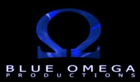
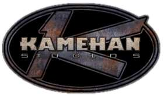
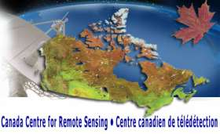

What experience do I have ?
Most of my work experience was obtained though my university's cooperation education program. Here is a short description of my work at each of my employers.
Software Development @ Blue Omega
Where? Work done through the Internet, though Blue Omega is based in Annapolis, Maryland
When? Between May and December 2004
What? Software development for the 'Damnation' Unreal Tournament modification
Damnation: Hell Breaks Loose is a modification for the popular Unreal Tournament 2004 game. In the beginning of 2004, Blue Omega decided to put together a team that would create a modification for Unreal Tournament and have it enter the Make Something Unreal Contest. Damnation was the result of that effort. My job was to develop software, in UnrealScript, that would conform to the guidelines set by Blue Omega for the modification. Thorough the project, I worked on the game's GUI, saving system, weapons and camera system. Damnation won 6th place in the 'Best Non-FPS' category during the Phase 4 of the contest. In the contest's Grand Finals, Damnation won 2nd place in 'Best Mods' category and 5th place in the 'Best Non-Interactive Movie' category. For more information, visit my Damnation project page.
Software Engineer @ NavCanada
Where? NavCanada is located near the airport in Ottawa, Ontario
When? Summer of 2003
What? Port of the existing DFIS software from HP Basic to HT Basic.
Working as a coop software engineer, my main occupation at NavCanada was to port the existing, aging DFIS software from the old HP computer architecture to a newer Windows machine. This would be done by running the software using the HT Basic for Windows interpreter. However it wasn't that simple: HP-specific devices such as magnetic recorders needed to be phased out and replaced with more recent devices. This was done by mapping, for example, a directory on the computer to act as a tape recorder. By using an GPIB interface card, most of the GPIB devices were still accessible from within Windows. Problems encountered during my work usually involved undocumented problems rising from using HP Basic code under HT Basic. At the end of my work term, I submitted a few recommendation that might allow my successor to complete the work that remained to be done.
Software and Asset Development @ Kamehan Studios
Where? Work done through the internet, though Kamehan Studios is based in Paris, France
When? Part time from Summer 2000 to Summer 2003
What? Map design, code writing and bug fixing
Tactical-Ops is a game that started as a modification for the Unreal Tournament game. After being approached by Atari, the Tactical-Ops team started development on a retail version of Tactical-Ops that eventually sold over 100 000 units. I created, along with Gerhald Weihrauch, one of the maps that was supplied with the game. As well as making some code additions, I worked on fixing bugs during crunch-time. After the game was released, I did some work on the game's patches as well as created a simple player add-on for the game. For more information, see my Tactical-Ops project page.
Research Assistant @ Ottawa Heart Institute
Where? The ottawa heart institute is located behind the Ottawa Civic Hospital, in Ontario
When? Fall of 2002
What? Modelization of heart physiology
My work at the Ottawa Heart Institute involved implementing heart physiology models. Using MATLAB, I was to implement a model that would use CAT-Scan data and approximate the rate of glucose processing in the heart. Prior to that, I had to learn all about heart and blood physiology as well as heart modelization.
Software Development and Optimization @ CCRS
Where? The CCRS is located in Ottawa, Ontario
When? Winter 2002
What? Implementing image analysis techniques
My work at the Canadian Centre for Remote Sensing involve the implementation, in C++, of a technique used to fuse high resolution and low resolution satellite images. In addition to this, I was to write a program that would analyze the quality of the fusion of two images.